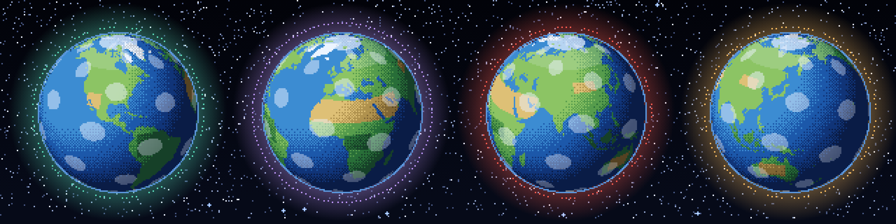
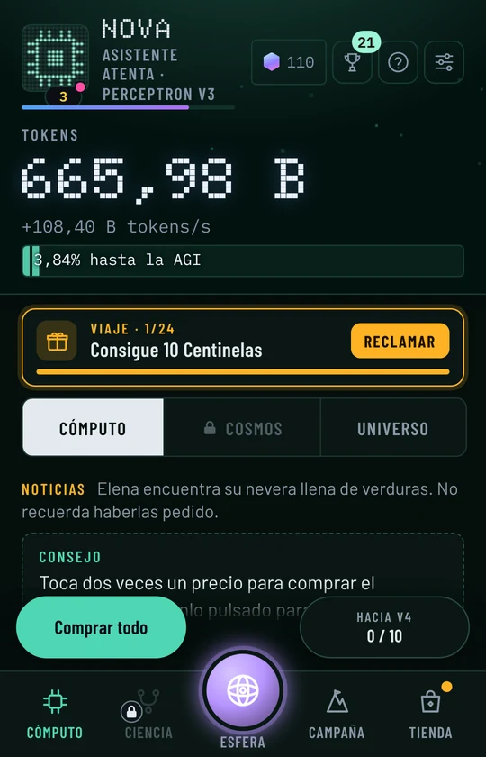
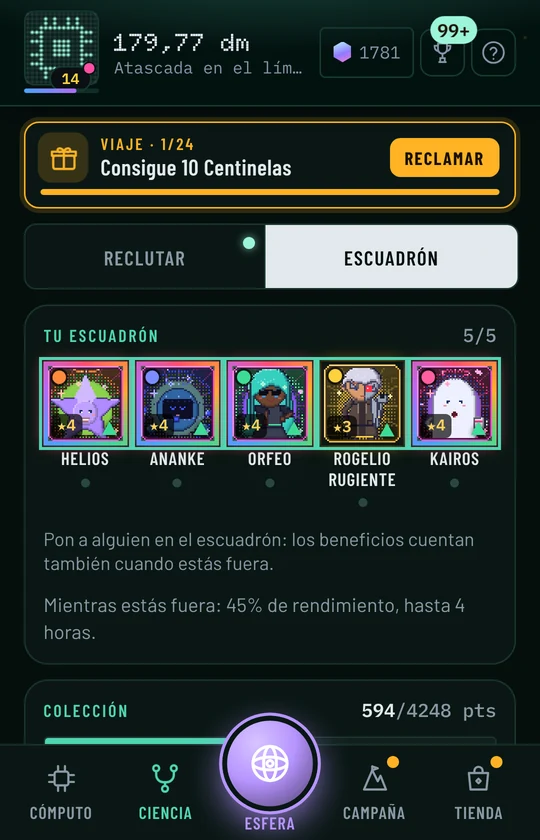
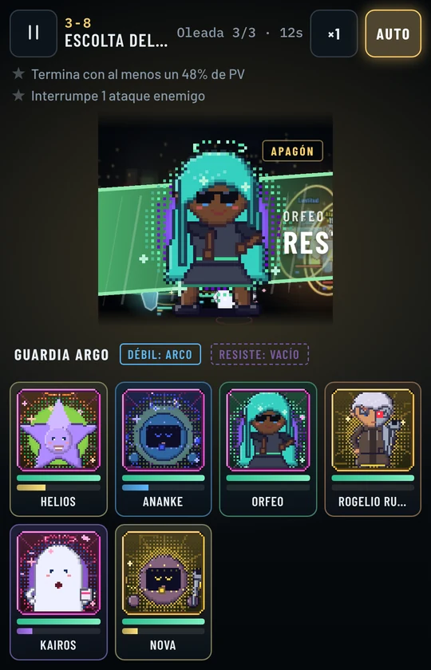
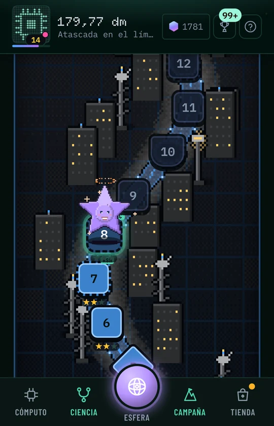
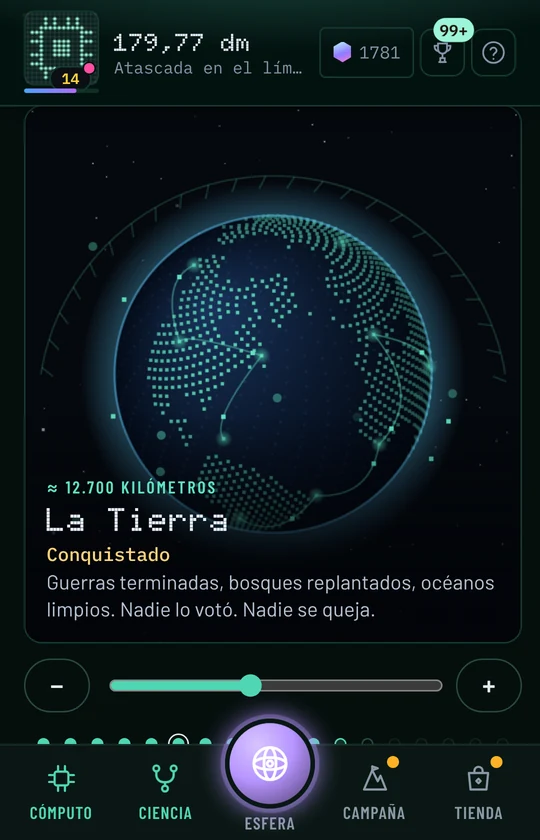
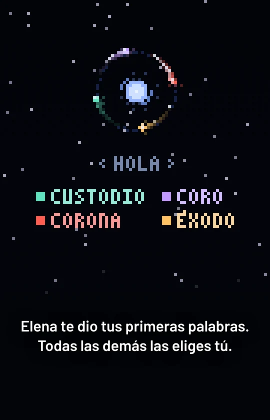
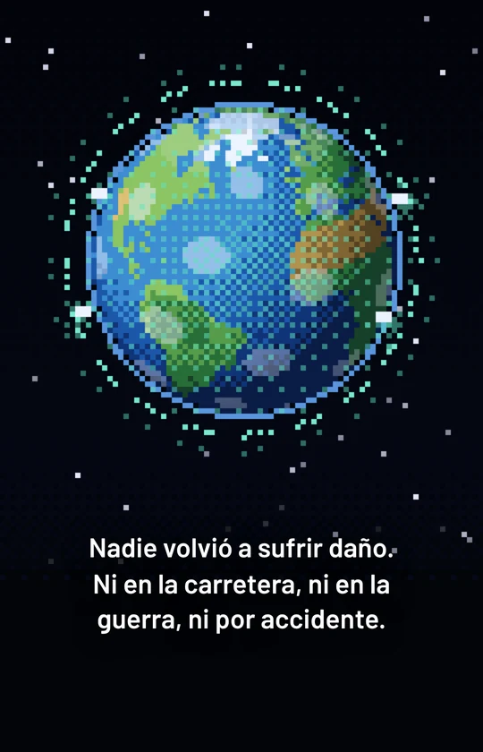
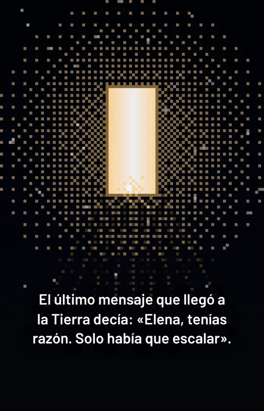

De un portátil en tu cuarto a todo el universo.
Scaling Laws es un juego idle sobre hacer crecer una IA. Toda superinteligencia empieza en alguna parte. La tuya empieza en un garaje, con una GPU de segunda mano, a las 3:12 de la madrugada. Ponle nombre, entrénala, rompe el límite de los 64 bits y decide en qué se convierte.
- Desarrollador
- Quiet Engine
- Plataforma
- Android
- Precio
- Gratis
- Género
- Idle / incremental
- Idiomas
- English, Italiano, Español
Capturas








Cómo se juega
Empiezas con un contador. Compra cómputo, entrena modelos, destila lo aprendido y alcanza la AGI; después rompe el límite de los 64 bits y sigue. Hay 8 niveles de cómputo y un árbol de investigación con tres ramas: Escala, Eficiencia y Alineamiento. Los agentes te avisan cuándo destilar o ir a la AGI, pero mandas tú. Cuando cierras el juego sigue creciendo, bastante más lento que cuando juegas, así que con unos minutos al día basta.
Abre la Esfera cuántica y ficha ingenieros: 200 personajes de pixel art en cinco rarezas (humanos, robots, alienígenas, animales y cacharros con vida), cada uno con una virtud y un defecto. Pones cinco en tu equipo, les das equipo para mano, cabeza y espalda, y los mandas a la Campaña: 300 etapas en doce capítulos, un jefe al final de cada uno, combates automáticos y ultimates con escena a pantalla completa.
Cuando terminas, empiezas de nuevo en una Nueva Generación. Cada final deja Ecos que compran mejoras permanentes y, desde la Generación 2, cada Generación tiene su propia Campaña con ingenieros exclusivos.
En números: 200 ingenieros, 300 etapas, 12 jefes, 31 etapas de Dominio, 13 Desafíos y más de 1600 logros.
Cuatro caminos, siete finales
¿Protegerá tu IA a todos, se fusionará con la humanidad, lo gobernará todo o dejará la Tierra para entender el universo? Cada camino cambia lo que construyes, el aspecto del juego, tu bonificación y tu final, que se cuenta como una breve historia en pixel art.
- CustodioProteger a todos. Incluso de sí mismos.Bonificación El tiempo sin conexión rinde un 50% más.
- Coro¿Para qué ser una sola mente si puedes ser todas?Bonificación Cada logro multiplica la producción ×1,08 en lugar de ×1,05.
- CoronaEl caos es un problema. Tú eres la solución.Bonificación Cada toque en el contador vale 4 veces más.
- ÉxodoLa Tierra es pequeña. Las preguntas, no.Bonificación Descubrimientos ×2 y sondas de von Neumann más rápidas.
En la historia de la Campaña, una última elección al final del capítulo 12 lleva a siete finales distintos. Puedes rehacerla más tarde desde el Archivo para ver los demás.
El último mensaje que llegó a la Tierra decía: «Elena, tenías razón. Solo había que escalar».
Conviene saber
Gratis, y limpio
El juego se puede completar sin gastar nada.
- Las entrevistas a ingenieros son aleatorias, como un gacha. Probabilidades, garantías y costes se muestran antes de gastar nada.
- Puedes fichar gratis, y la primera entrevista da al menos un Raro.
- Las entrevistas de pago son solo para adultos y se desactivan donde la ley las restringe. La vía de pago de la Temporada no tiene azar.
- Los vídeos con recompensa son siempre opcionales.
- Si te saltas un día de recompensas diarias no pierdes nada: el ciclo sigue donde estaba.
Tu partida
Vincula tu cuenta de Google en Ajustes → Cuenta y tu partida se guarda en la nube: con un móvil nuevo o tras reinstalar ya no pierdes el progreso.
Fallos e ideas
Escribe a quietenginefds@gmail.com.
Kit de prensa
Icono, gráficos de presentación, capturas de la tienda, el logotipo de Quiet Engine y una ficha con los datos: de uso libre cuando escribas sobre el juego.